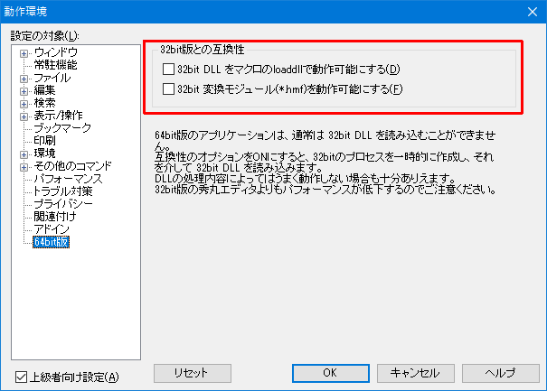

- マクロを実行すると、「DLLのロードに失敗しました」という内容のメッセージが表示されるのですが？

まずは ロードするDLL自体があるか、確認してみましょう。
DLLがない場合は、マクロの説明書などに入手方法が書かれていると思うので、確認しDLLを入手してください。
DLLがあるのに、DLLの読み込みに失敗する原因としては 以下の内容が考えられます。
デスクトップ版の場合
マクロが期待している位置にDLLがない。
DLLを、実行するマクロと同じ場所、マクロフォルダ、秀丸エディタ本体と同じ場所に配置するかは、 マクロの説明書等に記載されているはずなので、確認してください。マクロが期待している位置にDLLがある場合、マクロのDLLロード部分を確認見直してみてください。 単純にファイル名が間違っている場合もあります。(マクロフィル内にある、loaddll文 または loaddll関数を検索してみましょう)
64bit版秀丸エディタを使用しているのに、32bitのDLLをロードしようとしている。
基本的に、秀丸エディタで使用できるのは、本体と同じbit数のDLLだけです。- 32bit版秀丸エディタの場合は、32bitのDLL
- 64bit版秀丸エディタの場合は、64bitのDLL
64bit版秀丸エディタの場合、「その他」−「動作環境」−「64bit版」にある、 「32bit版との互換性」の設定で、32bitのDLLをマクロで使用する事も出来ますが、正常に動作する保証はありません。

[補足］も参照の事。
DLLを実行するためのファイルが足りない。 VCのランタイムライブラリ等、DLLの実行に必要なファイルがない場合にもDLLのロードに失敗します。 DLL本体の他に、必要なファイルがあるかどうか確認してください。
ストアアプリ版の場合
基本的にはデスクトップ版と同じですが、以下の制限があります。
デスクトップ版と違い、外部DLLを秀丸エディタ本体と同じ場所に配置することは出来ません。 その為、マクロフォルダ等、「秀丸エディタ本体」とは別の場所にDLLを配置する必要があります。
ただし、秀丸エディタに添付されている、“hmjre.dll”は、「秀丸エディタ本体」と同じ場所にあります。
ストアアプリ版は、2020/02/05現在、32bit版しかないので、DLLは32bitを使用する必要があります。
使用するマクロが、ストアアプリ版で使用する事を考慮していない場合は、マクロを修正する必要があります。
例えば、田楽DLLを使用するマクロが、
loaddll hidemarudir + "\\DengakuDLL.dll";となっていた場合、ストアアプリ版では秀丸エディタ本体と同じ場所にDLLを配置できないので、 DLLのロードに失敗することになります。
田楽DLLがマクロフォルダにある場合は、以下のようにマクロを修正します。
loaddll macrodir + "\\DengakuDLL.dll";デスクトップ版でも、ストアアプリ版でも、問題なく動くようにするには、DLLのロード部分を以下のようにする方法もあります。 ただし、ロードが成功するまで繰り返すので、マクロの起動が遅くなります。
//田楽DLLのロード loaddll currentmacrodirectory + "\\DengakuDLL.dll"; //実行するマクロと同じ場所 if (!result) loaddll macrodir + "\\DengakuDLL.dll"; //マクロフォルダ if (!result) loaddll hidemarudir + "\\DengakuDLL.dll"; //秀丸エディタ本体と同じ場所 if (!result) loaddll "DengakuDLL.dll"; if (!result){ message "田楽DLLの読み込みに失敗しました。"; endmacro; }実行環境を判別し、デスクトップ版なら秀丸エディタ本体と同じ場所、 ストアアプリ版ならマクロフォルダからロードするには以下のようにします。
//田楽DLLのロード //デスクトップ版の場合 $DLL_PATH = hidemarudir; if((platform & 0x02000000) == 0x02000000){ //ストアアプリ版の場合 $DLL_PATH = macrodir; } loaddll $DLL_PATH + "\\DengakuDLL.dll"; if (!result){ message "田楽DLLの読み込みに失敗しました。"; endmacro; }
- [補足]
64bit版秀丸エディタで、32bitの外部DLLをマクロで動作可能にした場合、 32bit外部DLLから“hmjre.dll”を使う時には注意が必要です。
外部DLLには、正規表現を使うために、“hmjre.dll”をロードして使う物もあります。
64bit版秀丸エディタに添付される “hmjre.dll” は 64bit の DLL です。 bit数の異なるDLLは、お互いにロードすることができないので、 32bit外部DLLから、64bit DLL の hmjre.dll をロードしようとしても必ず失敗することになります。
使用する 32bit外部DLL だけでマクロが完結するなら問題ありませんが、 32bit外部DLLが他のDLLもロードする必要がある場合は、少し面倒なことになります。
その為、「32bit版との互換性」で「32bit DLL をマクロの loaddll で動作可能にする」を有効にするのは、 あまりおすすめしません。 使用する外部DLを含め、32bit または 64bit で統一するほうが、面倒が少ないです。